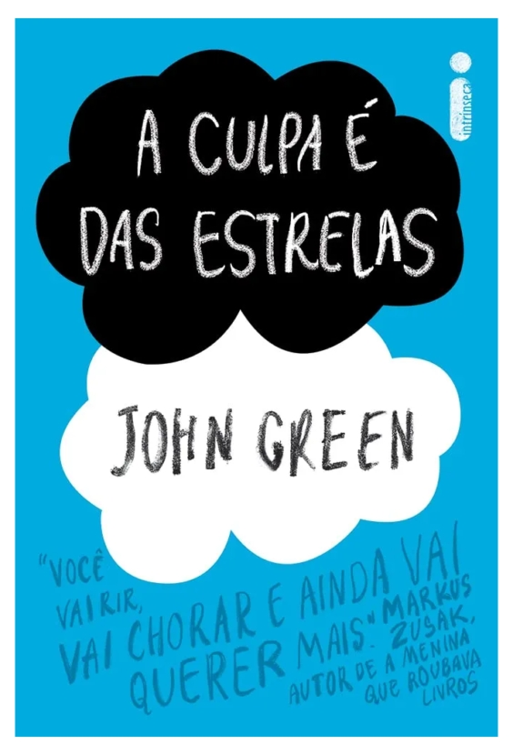

A culpa é das estrelas - John Green
Sinopse
Hazel é uma paciente terminal. Ainda que, por um milagre da medicina, seu tumor tenha encolhido bastante ― o que lhe dá a promessa de viver mais alguns anos ―, o último capítulo de sua história foi escrito no momento do diagnóstico.
Mas em todo bom enredo há uma reviravolta, e a de Hazel se chama Augustus Waters, um garoto bonito que certo dia aparece no Grupo de Apoio a Crianças com Câncer. Juntos, os dois vão preencher o pequeno infinito das páginas em branco de suas vidas.
Inspirador, corajoso, irreverente e brutal, A culpa é das estrelas é a obra mais ambiciosa e emocionante de John Green, sobre a alegria e a tragédia que é viver e amar.